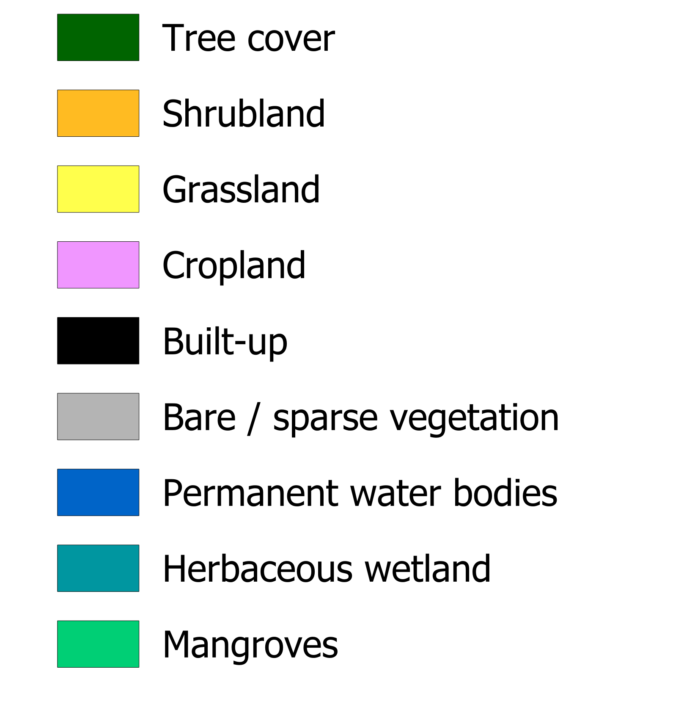
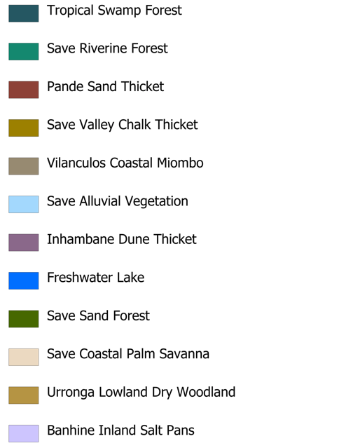
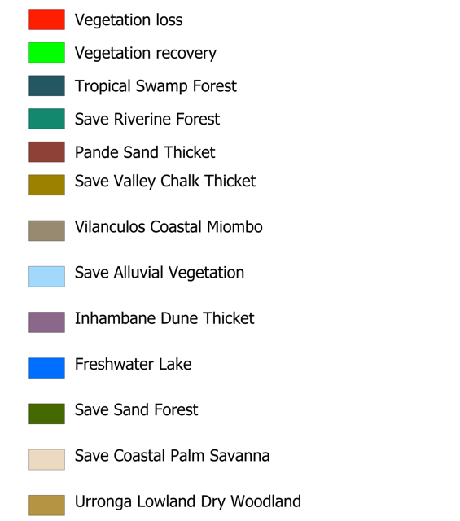

Este WebMap interativo apresenta dados geográficos de Ecossistemas e não só dos 4 distritos de Inhambane (Govuro, Inhassoro, Vilankulo e Mabote), foi desenvolvido no âmbito do projecto CBA SCALE+ da IUCN Moçambique, neste WebPortal poderá encontrar informações sobre ecossistemas, dinamica de ecossistemas, mudanças de uso e cobertura de terra e, outros dados sobre recursos naturais, infraestruturas e divisões administrativas.
Funcionalidades: O portal possui algumas feramentas para apoiar a analise que, estão dispostos à esquerda do WebMap, das quais se destacam as ferramentas para desenhar áreas de interesse, fazer recortes (clip), geolocalização e exportar dados em GeoJSON.


